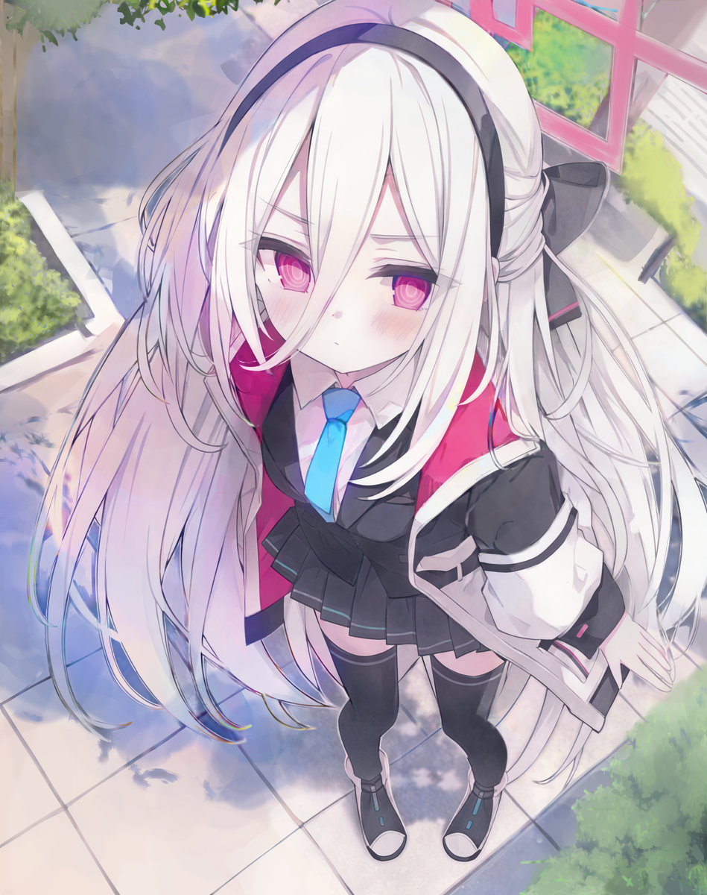
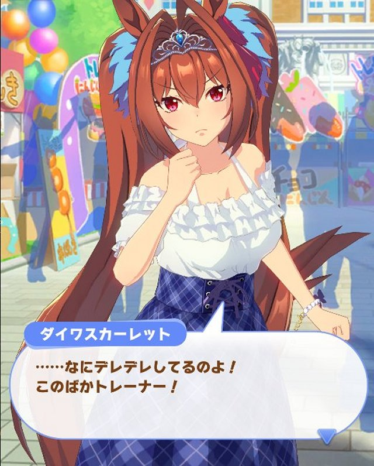

xdnet311491/internet archive☆
2026年11月15日よりAkafuyuくん(鯖主)生誕14周年らしい
print("hello world!")書くことないよ（笑）
実はPC環境でのアクセスが一番最適(UIの並び的に)なのは内緒
合計閲覧者数 … 人
- AIチャット自分のAPIキーでつなぐAIチャット。プロンプト設定・画像/音声/動画の添付・読み上げ対応(Gemini / OpenRouter / Groq)
- 背景切り抜きメーカー画像の背景を消して透明なPNGにする。AI(無料・端末内で処理)と、色で消す方法の2種類
- ごめんなさい、開発者用機能ですorzcrop_tool.html
- 回線テストping・ジッター・ダウンロード/アップロード速度をブラウザだけで測る
- ニコニコ本社を爆発させるボタンを押すとニコニコ本社が爆発します。爆発させた回数と履歴も残ります
- 強震モニター防災科研の強震モニターを地図に重ねて表示。直近の震度情報つき
- シンメトリ画像メーカー画像の半分(または1/4)を鏡のように折り返して、左右・上下・四方向対称の画像を作る
- バス系統幕メーカーバス系統幕メーカー(配布用).html
ボタンを長押ししてみてください(しょぼい機能が見れます（笑）)
以下からキャラ(生徒)を選択して何やってるんですか！勉強してください！をしよう

天童ケイ
ケイちゃんってかわいい！
1. 概要とプロフィール
名前：天童ケイ（てんどう けい） ※ガチャ加入時は「ケイ」表記
学園・所属：ミレニアムサイエンススクール特異現象捜査部（ゲーム開発部と兼部）
学年・年齢：1年生 / ？？歳
誕生日・身長：3月25日 / 152cm（どちらもアリスと同値）
CV：田中美海
ミレニアムのストーリーのキーパーソンであったAI「ケイ」が、様々な経緯を経て人型の身体を手に入れ、新たに確立した姿。アリスと同じ誕生日であることや、表向き「転校してきたアリスの双子の妹」という扱いになっている点から、ミレニアムの1年生として一つのアイデンティティを得て生きていくことを決断した。2. 名前とプロフィール変化のギミック
メインストーリー『デカグラマトン編』の連動イベント「鋼鉄大陸攻略戦」最終盤にて、アリスが家族の証として「天童」の苗字を授けたことで「天童ケイ」となった。
ゲーム内でもこのストーリーの進捗に連動し、最後までクリアするとガチャ画面等のプロフィール表記が「ケイ」から「天童ケイ」に変化し、自己紹介欄も大幅に書き下ろされるという異例の演出・ギミックが用意されている。3. 人物像と性格
外見・身体：アリスを左右反転・色反転させたような姿で、大きな黒いリボンが特徴。機械的な要素は薄く、血色や負傷時の赤い血など、有機性質の強い身体へと再構築されている。
性格：
元オペレーターAIゆえに頭の回転が早く、参謀や解説役を務めることが多い。
根が生真面目で大変な世話焼き。アリスに対しては過保護な一方で、周囲のボケに振り回されがちな「ゲーム開発部のおかん兼ツッコミ担当」として定着している。
気丈で反骨精神が旺盛。かつての「従者」としての役割から脱却し、自分自身の意志で「ケイ」として生きる強い芯を持っている。
先生に対しては典型的なツンデレ気質であり、恥ずかしいところを突かれると激しく動揺するコミカルな一面も見せる。4. 戦闘・ゲーム内性能
クラス：サポーター（STRIKER / BACK）
攻撃属性：神秘 / 防御属性：複合装甲（新登場）
固有武器：レールガン「エアレンデル：ルミナス・ノヴァ」
性能の特長：
低コストのEXスキルで、指定範囲に味方の攻撃力アップと強力な神秘特効加算のフィールドを展開する。
バフ終了時に、範囲内の味方が与えたダメージを蓄積して敵へ叩き込むノーマルスキルを発動する。
特殊装甲ボスに対する強力な火力支援要員として、実装時の制約解除決戦（コクマー）等で圧倒的な適性を発揮している。
通常アリス、臨戦アリスのどちらとも同時出撃時に専用の特殊勝利モーションが発生する。5. 主な人間関係
天童アリス：元主人であり、現在は義姉妹（アリスが姉、ケイが妹）。互いに対等な存在として接しており、アリスを非常に大切に思っている。
先生：かつての敵対関係から和解。「ケイ」としての自己を構築するきっかけをくれた存在であり、普段はツンデレな態度をとりつつも特別な信頼を寄せている。
調月リオ：自身の復活と身体の用意に尽力してくれた人物。親子的とも言える関係性があり、時折リオの部屋の片付けなど世話を焼いている。
才羽モモイ：ゲーム開発部の問題児。生活態度のルーズさなどに苦言を呈しつつも、良いコンビとして賑やかなやり取りを見せている。
-# Geminiがまとめました# 個人的思うこと
・わたすの最推し
・ストーリー性があるから大好きなんだよなあ！！！！！(某あの人)
・ツンデレ大好き！(属性)
・一部総力戦とか大決戦以外で使う機会はないかな
・黒ケイ(どういうものかは参照)もすげえかわいいんだな
間宵シグレ
ヤニねこのアルねこ枠/ミヤコ以上の酒カス
1. 概要とプロフィール
名前：間宵シグレ（まよい しぐれ）
学園・所属：レッドウィンター連邦学園 2年生 / 227号特別クラス
年齢・誕生日：16歳 / 1月22日
身長：156cm
趣味：自家製ドリンクを作ること（カクテル・造酒など）
CV：河瀬茉希
レッドウィンター連邦学園の2年生で、オコジョ（冬毛）のような耳と大きな尻尾が特徴。
キヴォトス生徒の中では珍しく「酒好き」という問題児で、配給用カンポットにウォッカを混ぜたことで停学処分（227号特別クラス送り）となった。マイペースかつ楽天家で、相手を煙に巻く思わせぶりな言動や悪戯を好む。2. 人物像と特徴
酒・自家製ドリンク愛好家：自家製ドリンク（カンポットやモルスなど）やカクテル作りが趣味。砂糖たっぷりの極甘仕様や「少し発酵しているかも」という危ういドリンクを人に飲ませ、その反応を楽しんでいる（※フルーティーな特製フルーツ牛乳など、相手に合わせたノンアルコールのクオリティ高いドリンクも作れる）。
幼馴染・ノドカとの関係：同じく227号特別クラスの天見ノドカとは幼馴染。「ノドカを思ってわざと騒ぎを起こして追いかけてきた」とも噂されている。激しい不満を持つノドカに対し、自身は比較的悠々自適に過ごしている。
ミステリアスな性格：掴みどころがなく、何か聞かれてもはぐらかすことが多い。特に先生をからかって楽しむ傾向がある。3. 衣装バリエーション
通常版：大きな防寒帽とコート、グレネードランチャー（ЦКИБ РГ-6モデルの「スプリングパンチ」）を装備。
温泉版：イベント「227号温泉郷の運営記録！」にて温泉郷従業員として浴衣姿で登場。工務部の生徒たちに発酵モルスを振る舞い丸め込む活躍を見せた（2023年10月のイベント常設化に合わせてプレイアブル実装）。4. 戦闘・ゲーム内性能
【通常版】（★3 / 爆発・重装甲 / MIDDLE・アタッカー）
役割：広範囲攻撃を得意とするSTRIKERアタッカー。
特徴：
EXスキルで円形範囲内の敵にダメージを与えつつ火傷（持続ダメージ）を付与する。
サブスキルで通常攻撃の攻撃範囲が大幅に拡張（最大2倍）される。
【温泉版】（★3 / 貫通・特殊装甲 / BACK・ヒーラー）
役割：全体持続回復と会心バフを持つSPECIALヒーラー。
特徴：
EXスキル（コスト5〜6）で円形範囲内の味方全員に広範な持続回復（リジェネ）を付与する。
サブスキルで味方の会心ダメージ率を強化可能。
徐々にダメージを受ける長期戦に適性があり、特に総力戦・大決戦「クロカゲ」などで非常に高い活躍を見せる。5. 関連ネタ・ミーム
実装前の「立ち絵2種類」ネタ：2021年初頭にキャラクター発表がされつつも実装が長らくおあずけとなっており、未実装のままイベントで「温泉（浴衣）立ち絵」が追加されたため、「未実装なのに立ち絵が2種類ある生徒」としてネタにされていた（現在は両方実装済み）。
タグ数1000件一番乗り：温泉版の実装などをきっかけにファンアートが急増し、レッドウィンター所属生徒の中で最初にPixiv等の関連イラストタグ数が1,000件を突破した。
ネット上での愛称：その思わせぶりな態度や、温泉版メモリアルロビーの艶やかな雰囲気などから、ファンからは「ドスケベオコジョ」という通称で親しまれている。# 個人的思うこと
・マジで酒はよろしくない
・酒は所詮発酵もの
・↑そう考えるとおいしそうには聞こえない
・通常立ち絵だとショートなのに温泉だとロングっぽいのどうした
・使うとこはあるけどドンピシャ感はない
・嫁
・二番目の最推し柚鳥ナツ
不思議っ子好きすぎて毎日真似して遊んでる←きも←一人称が「き」の可能性
1. 概要とプロフィール
名前：柚鳥ナツ（ゆとり なつ）
学園・所属：トリニティ総合学園 1年生 / 放課後スイーツ部
年齢・誕生日：15歳 / 12月4日
身長：152cm
趣味：ロマンチックなこと、思索
CV：長縄まりあ
トリニティ総合学園の1年生で、放課後スイーツ部に所属する少女。
マイペースかつ哲学者・ロマンチストな性格で、「ロマンを共有したい」という思いから不思議な言動で周りを煙に巻くことが多い。トリニティ上層部の派閥争いなどには無関心な一方、本質を見抜く鋭い洞察力を発揮することもある。牛乳とお菓子（スイーツ）が大好物。2. 人物像と性格
「ロマン」の探求者：幅広いロマンの基準を持ち、カズサの過去に乗っかって「放課後スイーツ団」を名乗るなど独特な感性を発揮する。絆ストーリーではお菓子を教材にして「ロマン」を伝授しようとする。
鋭い観察眼：生徒会（ティーパーティー）の単語を純粋なお茶会と勘違いしている節がある一方、デモ活動の空気を「大半の生徒は何のデモか分かってないのでは」と冷静に指摘するなど、物事の本質を突く目を持つ。
裕福な背景：トリニティの生徒らしく金銭的余裕があり、バンドを結成した際には自前で楽器を用意している。3. 衣装バリエーション
通常版：制服姿にライオットシールド（透明なポリカーボネート製、スイーツ部のエンブレム入り）を装備。
体操服：イベント「GetSet,GO！～キヴォトス晄輪大祭～」の障害物競走で登場。「なまこソーダ」なるゲテモノを飲み、立ったまま気絶してヘイローが消える珍事を起こした。
バンド版：イベント「-ive_aLIVE!」で登場したガールズバンド「シュガーラッシュ」の衣装。ドラムと事務を担当し、いつもの「ロマン」を「ロック」に置き換えている（※2025年復刻イベントにて恒常★3生徒として実装）。4. 戦闘・ゲーム内性能（通常版）
クラス：タンク（STRIKER / FRONT）
攻撃属性：神秘 / 防御属性：重装甲
固有武器：サブマシンガン「ビヨンド・ザ・ルミネーション」
性能の特長：
自身回復＋デバフ解除：EXスキル（コスト3）で自身のHPを回復しつつ、弱体状態（デバフ）を1つ解除できる。サブスキルで使用ごとに回復量・被回復率が強化される。
味方への攻撃力バフ：ノーマルスキルで近くの味方にパイを投げ、最大3人まで攻撃力バフを付与する。NSバフのため他生徒のEXバフと重複可能。
ペロロジラ適性：定期的に強力なデバフを付与してくる総力戦・大決戦「ペロロジラ」において、単体でデバフ受け＆即座解除が可能なため極めて高い適正を持つ。
臨戦ホシノとの判別注意：ペロロジラ戦で同時起用される「臨戦ホシノ（アタッカー）」と後ろ姿やアイコンの配色（ピンク髪ポニテ）が酷似しており、バフの対象選択を間違える事故が発生しやすい。5. 関連ネタ・ミーム・人間関係
ネットミーム「かんしゃあ！」：他の生徒から回復を受けた際の「感謝ー！」というボイスの発音やイントネーションが独特で可愛らしいことから、MAD動画の素材等として親しまれている（2024年7月のアプデで字幕追加）。
百合園セイア：イベント「Code:BOX」などで交流。小難しい言い回しを好む者同士、ナツの独特な表現に理解を示し通じ合う描写（ナツセイ）が見られた。
-# Geminiがまとめました# 個人的思うこと
・不思議っ子って本当に穏やか
・おお
・2024年から2025年最後までの最推しらしい
・スイーツよりナツを食べたい
・よくちょこぷにでネタにされがち
・バンドナツと通常ナツで結構変わりがち
・大体ツバキに役目奪われがち(タンカーとして)鬼方カヨコ
カヨコの髪色ガチたまらん
1. 概要とプロフィール
名前：鬼方カヨコ（おにかた かよこ）
学園・所属：ゲヘナ学園 3年生 / 便利屋68（課長）
年齢・誕生日：18歳 / 3月17日
身長：157cm
趣味：音楽CD収集（特にヘビメタ）
CV：藤井ゆきよ
ゲヘナ学園の3年生で、「便利屋68」のブレイン兼課長。
鋭い目つきや無口さから「怖い人」と誤解されがちだが、本質はマメで心優しく、真っ当な倫理観を持った苦労人。暴走しがちなアルやメンバーに振り回されつつも、冷酷かつ冷静な判断力と情報収集能力で要所を支えている。2. 人物像と隠された過去
音楽と猫が好き：ヘビメタ（ブラック・デス・ポイズン）を愛聴し、密かに猫が大好物。
高い工作能力：SNS乗っ取り犯の特定から、単独行動時の爆弾・煙幕による工作活動までこなすプロフェッショナル。
ゲヘナの歴史に関わる過去：
2年前、先代生徒会長「雷帝」の圧制に抗う"反雷帝派"のメンバーとして活動（アコ、マコト、ヒナとも当時からの知己）。
勝利後は権力（万魔殿）に就かず姿を消したが、現在も雷帝の残党地下組織『嵐』の動向を警戒している。3. 衣装バリエーション
通常版：パーカーにスケルトンマーク、サイレンサー付きハンドガン「デモンズロア」を所持。
晴れ着：イベント「新春狂想曲第68番」で登場。アルのイメージアップ戦略によりレンタル着物を着用（2023年3月の復刻時に実装）。
オペレーター：メインストーリー最終編「ウトナピシュティムの本船」ブリッジ要員として登場。上着を羽織った専用デザイン。
ドレス：イベント「0068 オペラより愛を込めて!」で登場。背中やスリットが特徴的な艶やかな装い。アル（ドレス）とのカフェ家具専用連携モーションが存在する。4. 戦闘・ゲーム内性能
【通常版】（★2 / 爆発・重装甲 / MIDDLE・サポーター）
役割：広範囲への「恐怖（CC）」付与に特化したサポーター。
特徴：EXスキル（コスト6）とNSで恐怖状態を付与。通常攻略でのコストの重さがネックだが、高いCC強化力と攻撃範囲を持つため、総力戦・大決戦の「ホド」や「ワカモホバークラフト」などのCCギミック攻略で必須級のキーパーツとなる。
【正月版】（★3 / 神秘・特殊装甲 / MIDDLE・サポーター）
役割：特定アタッカーの火力を跳ね上げる単体特化バッファー。
特徴：EXスキル（コスト2）で指定したストライカー1人に破格の神秘特効（最大92.8%）と「お守り」状態を付与。さらに会心200回成功時にサブスキルで特効が追加加算される。特殊装甲ボス戦において最強クラスのバッファー。
【ドレス版】（★3 / 貫通・軽装備 / MIDDLE・アタッカー）
役割：条件付き確定会心＆防御無視を持つ単体物理アタッカー。
特徴：EXスキル（コスト5）で高倍率ダメージ＋防御無視（最大64%）を与える。10秒間非被弾で移行する「潜入行動」状態時は確定会心かつ会心ダメ率が大幅増加する。被弾で解除されるリスクがあるため、配置や遮蔽の運用管理が重要なテクニカルキャラ。5. 関連ネタ・ミーム・人間関係
年齢・留年説？：便利屋唯一の18歳。マコト（3/19生）と誕生日が近く、同学年の他の生徒より1歳上のため留年説が囁かれることもあるが詳細は不明。
歌唱力のギャップ：キャラソン「一日一悪☆レッツゴー」では、他メンバーと比べて際立って歌が上手いことが話題になった。
元ネタ（ベレト）：ソロモン72柱の悪魔「ベレト」（猫の演奏する音楽とともに現れ、怒りの相を持つとされる）がモチーフと推測されている。
二次創作の傾向：猫好き設定が誇張され、作中の猫耳生徒（セリカ、カズサ、マリーなど）を可愛がりすぎる・拉致するネタが定番となっている。# 個人的思うこと
・湿気は十分にある
・足寒そう
・DoReMi君、ブルアカを裏切った割にはいい立ち絵を書いてらっしゃる
・ブルアカやりたて(2024年くらい)の推しらしい
・カヨコに限らずゲヘナ可愛い子多すぎる
ダイワスカーレット
陽気っ子はたまらんねえ
1. 概要とプロフィール
名前：ダイワスカーレット
所属：トレセン学園 中等部2年生 / 栗東寮
誕生日・身長：5月13日 / 163cm
スリーサイズ：B90 / W56 / H82
キャッチコピー：唯我独尊！負けん気満点のツンツンガール
CV：木村千咲（初期のみ上坂すみれ）
実在の競走馬「ダイワスカーレット」をモチーフとしたウマ娘。
「常に1番であること」に異常な執着を持つ負けず嫌い。表向きは品行方正で頼れる優等生を装っているが、本質は強烈なプライドと勝ち気な性分を秘めたツンデレ少女。学業面でもテスト成績は学園トップクラスを誇る。2. 人物像とビジュアル
外見的特徴：栗毛の膝丈スーパーロングツインテールに、母譲りのシルバーティアラ、耳元の真紅のリボン、八重歯が特徴。中等部離れした恵まれた体躯を持ち、ゲーム内3Dモデルでもトップクラスの発達したスタイルの持ち主。
性格・内面：妥協を許さない努力家。忙しい両親（特に母親）への思いから家事全般が得意。トレーナーや親しい者の前では地の強気な本性を剥き出しにする一方、根は寂しがり屋で涙もろい一面もある。
ウオッカとの関係：同期デビューかつ寮の同室。互いに「1番」をかけて競い合う永遠の宿敵（ライバル）であり、本音をぶつけ合える最高の相棒。3. 主な衣装バリエーション
勝負服［トップ・オブ・ブルー］：群青色の大礼服スタイル。黒のショートパンツとガーター付きサイハイソックスで引き締めたデザイン。
勝負服［緋色のニュイ・エトワレ］：2022年冬イベント衣装。赤のチェック柄とファーをあしらったサンタ風の冬仕様で、髪型はハーフアップ。
勝負服［陣風の花紺青］：2026年10月シナリオ『朋、史解き―午式駿大祭―』衣装。流鏑馬をモチーフとした和風テイストで、ポニーテールに変化。
その他：水着（トライフル☆バケーション）、ウェディングドレス（Something Blue）、私服（オフショル＆チェック柄スカート）など。4. ゲーム内性能と育成の特長
【育成ウマ娘】
初期実装［トップ・オブ・ブルー］（★2 / 逃げ・先行）
チュートリアルで最初に育成する看板キャラクターの1人。マイル・中距離に適性を持ち、最終目標として長距離の「有馬記念」が設定されている。
固有二つ名「ミスパーフェクト」：全レースで2着以内（連対率100%）をキープしつつ、桜花賞・秋華賞・エリザベス女王杯を含む重賞10勝を達成することで獲得可能。
衣装違い［緋色のニュイ・エトワレ］（★3 / 逃げ・長距離寄り）
長距離適性がAに引き上げられ、有馬記念を攻略しやすくなった覚醒版。5. 史実（モチーフ馬）のすごさ
生涯連対率100%（12戦8勝・2着4回）：デビューから引退まで一度も3着以下に落ちなかった（シンザン以来の快挙）。
牝馬二冠＆37年ぶりの有馬記念制覇：2007年の桜花賞・秋華賞を制し、2008年の有馬記念では牝馬として37年ぶりの優勝を達成。
ウオッカとの歴史的死闘：2008年天皇賞（秋）において、ウオッカとわずか2cm差という伝説的な大接戦を演じた。父アグネスタキオン譲りの競走能力と圧倒的な前進気勢で時代を築いた名牝。特殊モーション
特殊モーションが付いている曲: 2. けーはまっど、4. ユメ先輩(身内ノリでは牛込柳町パーククリニック)のテーマ、10. ﾕｳｶの絆ダイアローグ、11. 彩りキャンバス、12. ほくりくトリップ。これらの曲を選んでいるときだけ、背景で動画が流れます。
設定のない曲は、これまで通り白い背景のオープニング画面になります。
壁紙の変更
選ぶと、その場で壁紙が切り替わります。動画はデータ通信量が大きいので、モバイル回線のときは大きさ(MB)に注意してください。
ボタンの透明度
ボタンやカードなど、押せる部分の背景の濃さを変えます。左いっぱい = 透明、右いっぱい = 完全不透明です。初めは 25% です。選んだ値は、次にサイトを開いたときも使われます。
初期値に戻す
ボタンにカーソルを合わせると、右端から暗くなって、少し大きくなります。
音楽
オープニングと一体化
ONにすると、オープニングの曲が入場しても切り替わらず、そのままメイン画面でも流れ続けます(音量だけメイン画面用になります)。このあいだ「メイン画面」の曲は使われません。
カーソル効果音
ボタンにカーソルを合わせたときの音です(マウスのときだけ鳴ります)。
オープニング曲の変更
選んだ曲は、次にサイトを開いたときのオープニング画面で流れます。▶ で試し聴きできます。
メイン画面の曲の変更
選ぶと、いま流れているメイン画面の曲がすぐ切り替わります。▶ で試し聴きできます。
パスワードを入力してください。
開発者機能
この版のID
-閲覧者数の「カウント済み」を解除
保存した設定をすべて消す
ロックする